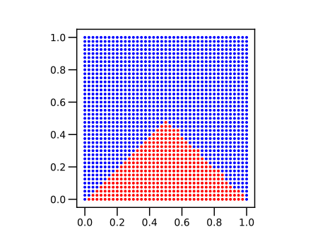
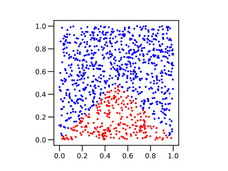
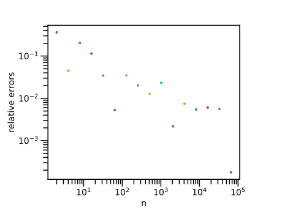
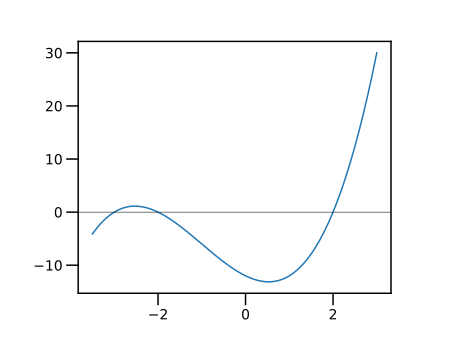
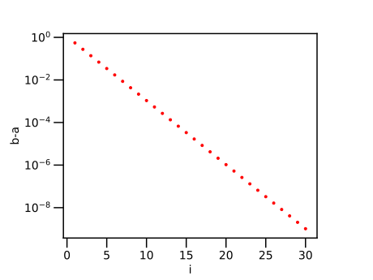

第5回：■ 条件式・■ 条件分岐
■ 数の大小比較
値が等しい・異なる
演算子 == は、a == b のように用いて、値が等しいか否か判定する。 演算子 != は、値が異なるか否か判定する。 成立すれば(真ならば) true が、 成立しなければ(偽ならば) false が結果となる。
julia> 1 == 1
true
julia> 1 == 2
false
julia> 1 != 1
false
julia> 1 != 2
trueより大きい
演算子 > は、a > b のように用いて、a の値が b の値よりも大きいか否か。 演算子 >= は、a >= b のように用いて、a の値が b の値以上であるか否か判定する。
julia> 2 > 1
true
julia> 2 >= 1
true
julia> 2 >= 2
trueより小さい
演算子 < は、a < b のように用いて、a の値が b の値よりも小さいか否か。 演算子 <= は、a <= b のように用いて、a の値が b の値以下であるか否か判定する。
julia> 2 < 1
false
julia> 2 <= 1
false
julia> 2 <= 2
true■ 論理型
比較演算子の結果は true または false のどちらかである。 この二つの値からなるデータの種類を論理型 (logical type)という。
■ if文
Conditional Evaluation (section)
if文は、直後に論理式をとる。 論理式の値が true なら、if文の次の文から、end, else, elseif が出現するまでの文を実行する。
条件が成り立つときだけに実行される部分をifブロック(block)という。
ブロックは、字下げ (indent) で表記される。が、字下げは見やすさのためだけである。
julia> x=1
1
julia> y=2
2
julia> if x < y
println("x は y より小さい")
end
x は y より小さいifブロックの後ろに、else文が続く場合がある。 論理式の値が false なら、else文の次の文から end が出現するまでの文 (elseブロック)を実行する。
julia> x=1
1
julia> y=2
2
julia> if x < y
println("x は y より小さい")
else
println("x は y より小さくない")
end
x は y より小さいelse文の前に、elseif文が続く場合もある。 最初の if文の論理式が false なら、 elseif文の論理式を計算し、それが true なら、elseif 文の次の文から、elseifまたはend が出現するまでの文 (elseifブロック)を実行する。
julia> x=1
1
julia> y=2
2
julia> if x < y
println("x は y より小さい")
elseif x > y
println("x は y より大きい")
else
println("x は y と等しい")
end
x は y より小さい■ if式
if式は、論理式が成立したブロックの最後の値を、式の値とする。
julia> x=40
40
julia> m=if x >= 100
"x は 100 以上である"
elseif x >= 50
"x は 50 以上である"
elseif x >= 20
"x は 20 以上である"
else
"x は 20 よりも小さい"
end
"x は 20 以上である"
julia> @show m
m = "x は 20 以上である"
"x は 20 以上である"if式を用いて ▼ 絶対値関数 を、以下のように書くこともできる。
julia> myabs1(x) = if x >= 0
x
else
-x
end
myabs1 (generic function with 1 method)
julia> @show myabs1(-1)
myabs1(-1) = 1
1■ 3項演算子
Conditional evaluation "ternary operator"
a ? b : c
条件 a が真(true)なら b を、偽なら c を値とする「マクロ」である。
julia> m= 2 > 1 ? "yes" : "no"
"yes"
julia> @show m
m = "yes"
"yes"if式を用いて ▼ 絶対値関数 を、以下のように書くこともできる。
julia> myabs2(x) = x >= 0 ? x : -x
myabs2 (generic function with 1 method)
julia> @show myabs2(-1)
myabs2(-1) = 1
1■ 論理演算
論理否定
論理否定 ! a は、aの論理値を反転する。
julia> ! true
false
julia> ! false
true論理積
論理積 a && b は、a と b との両方が true のときだけ true となる。言い換えると、a と b との、少なくとも一つが false なら、false となる。
julia> true && true
true
julia> true && false
false
julia> false && true
false
julia> false && false
false■ 数の大小比較の連続した記述
数の比較演算子は、連続して記述できる。
julia> 1 < 2 < 3
true
julia> 1 < 2 && 2 < 3
true論理和
論理和 a || b は、a と b との少なくとも一つが true のとき true となる。言い換えると、a と b のどちらも false のときに false となる。
julia> true || true
true
julia> true || false
true
julia> false || true
true
julia> false || false
false■ 短絡評価
Short-Circuit Evaluation (section)
論理積 a && bと論理和 a || bの評価において、 第1項 a で結果が決まるなら、第2項 b は評価しない。 これを短絡評価という。具体的には。
- 論理積
a && bにおいて、aが 偽falseなら、bを評価しない。
( a が 偽 false なら、b の値によらず、論理積 a && b は偽 false であるから。)
- 論理和
a || bにおいて、aが 真trueなら、bを評価しない。
( a が 真 true なら、b の値によらず、論理和 a || b は 真 true であるから。)
●▼ 論理型〜整数型の一つとして
Bool 型は、2進数1桁の符号なし整数 UInt1 である。 整数と論理型の値との演算ではfalse は整数 0、true は整数 1 とみなされる。
julia> 2+true
3
julia> 2+false
2逆に、整数 0 と 1 を論理型に変換するには関数 Bool を用いる。
julia> Bool(0)
false
julia> Bool(1)
true
julia> Bool.([0,1]) # 整数のベクトル [0,1] を論理型のベクトルに変換する
2-element BitArray{1}:
false
true●▼ 論理式と真理表
論理式 (logical expression) とは、 論理型の変数、または、それらに論理演算を適用した式をいう。
真理表（truth table）とは、 論理式に出現する変数（論理変数）の全ての組合せに対して、論理式の値を示した表である。
上の 論理和, 論理積 では、論旨式に変数の４通りの組み合わせに対する演算結果を列挙した。
上で導入した論理和 a || b および、 論理積(@ref) a && b に対して、 論理変数 a と b の全ての組合せに対する計算結果を、計算してみよう。
julia> for a in [false,true]
for b in Bool.([0,1])
@show a, b, a || b, a && b
end
end
(a, b, a || b, a && b) = (false, false, false, false)
(a, b, a || b, a && b) = (false, true, true, false)
(a, b, a || b, a && b) = (true, false, true, false)
(a, b, a || b, a && b) = (true, true, true, true)今度は、論理式 z=(!a && b) || (a && !b) の値を計算してみよう。
ここで、論理否定 ! は、論理和 && や論理積 || よりも 優先順位が高い演算であるので、!a || b は (!a) && b と解釈される。!(a || b) とは解釈されない。
julia> for a in Bool.([0,1]), b in Bool.([0,1])
x= !a && b
y= a && !b
z= x || y
@show a, b, x, y, z
end
(a, b, x, y, z) = (false, false, false, false, false)
(a, b, x, y, z) = (false, true, true, false, true)
(a, b, x, y, z) = (true, false, false, true, true)
(a, b, x, y, z) = (true, true, false, false, false)論理式 z は、
aとbの値が異なるときにtrueaとbの値が等しいときにfalse
の値をとる。 この論理式は、排他的（はいたてき）論理和（exclusive or, 略して exor あるいは XOR）と呼ばれる。
▼ 総当たりによる不定方程式の解法
方程式の数よりも、未知数の数が少ない方程式を不定方程式という。 未知数の性質が決まっていれば、未知数の候補を、方程式に代入して、 成り立つ未知数の組合せを求めることができる (総当たり攻撃, brute-force attack)。
問題 「負ではない三つの整数 $x, y, z$ が、次の二つの等式を同時に満たすという。
三つの数 $x, y, z$ の組合せを全て求めよ。」
ここで、 $x, y, z$ は、0から24までの整数である。 $x, y, z$ の全ての組み合わせに対して、二つの等式が成り立つ条件を、if文に渡す。
julia> for z=0:24
for y=0:24
for x=0:24
if x+y+z==24 && x+2*y+4*z==51
@show x,y,z
end
end
end
end
(x, y, z) = (1, 21, 2)
(x, y, z) = (3, 18, 3)
(x, y, z) = (5, 15, 4)
(x, y, z) = (7, 12, 5)
(x, y, z) = (9, 9, 6)
(x, y, z) = (11, 6, 7)
(x, y, z) = (13, 3, 8)
(x, y, z) = (15, 0, 9)上のfor文の繰り返しは、３重の入れ子になっている。これは、一つのfor文にまとめられる。
julia> for z=0:24, y=0:24, x=0:24
if x+y+z==24 && x+2*y+4*z==51
@show x,y,z
end
end
(x, y, z) = (1, 21, 2)
(x, y, z) = (3, 18, 3)
(x, y, z) = (5, 15, 4)
(x, y, z) = (7, 12, 5)
(x, y, z) = (9, 9, 6)
(x, y, z) = (11, 6, 7)
(x, y, z) = (13, 3, 8)
(x, y, z) = (15, 0, 9)▲ 練習：総当たりによる不定方程式の解法
以下の式を満たす整数 $𝑎,𝑏$ をすべて求めよ。(京都大学・数学 2005年)
- (1) $𝑎^3−𝑏^3=65$,
- (2) $𝑎^3−𝑏^3=217$
▼ 格子点による平面領域の塗り分け
平面座標 の第一象限 $0 \le x \le 1, 0 \le y \le 1$ の範囲に、 格子点を配置しよう。
そのうち、$x^2+y^2 \lt 1$ の範囲にある点を赤で、 それ以外を青で色分けして示そう。
二重の繰り返し (二重ループ)を用いた。
刻み幅は各軸 0.025 に選んだので、 格子点の総数は ${40}\times{40}=1600$ 個である。
赤色の範囲は、4分円となる。
using PyPlot
plt.axes().set_aspect("equal")
for y=0:0.025:1
for x=0:0.025:1
c = x*x + y*y < 1 ? "r" : "b"
plot(x,y,".", color=c)
end
end今度は、二つの不等式 $y < x$ と $y < 1-x$ の両方に囲まれる領域を、 赤で示そう。
二重ループを一つの for 文にまとめた。for 文の右側に書かれたループ変数が内側のループに相当する。
using PyPlot
plt.axes().set_aspect("equal")
for y=0:0.025:1, x=0:0.025:1
if y < x && y < 1-x
c="r"
else
c="b"
end
plot(x,y,".", color=c)
end
▲ 練習
格子点の刻み幅を大きく、または、小さくして、 色分けの様子を観察してみよ。
関数plotのfmtパラメータを . から o (circle)に変えてみよ。 さらに、markersizeパラメータを加えて、マーカーの大きさを調整できる。
plot(x,y,"o", markersize=3)
刻み幅を小さくすると、格子点の数は急激に増える (例えば、$x,y$軸方向の刻みの数を2倍にすると、格子点の数は 4倍になる)ので、刻み幅を急激に小さくすべきではない。計算量が増えた場合、数分以内に計算が終わらない可能性もあるが、このような状況を経験するのも重要である。
▲ 練習
以下の領域を表す条件を、式で表せ。その領域を、格子点を用いて塗り分けてみよ。
- 点 $(0,0)$ と点 $(1,0)$ を一辺とし、第一象限に描かれた正三角形
- 中心 $\left(\dfrac{1}{2},\dfrac{1}{2}\right)$ , 半径 $\dfrac{1}{2}$ の円
■ 擬似乱数
計算機で発生する乱数を、擬似乱数 (pseudorandom numbers)という。
本来の意味の「乱数」は、計算する方法がないはずである。 にもかかわらず、ある手順で乱数を発生しているので「擬似乱数」という。
関数 rand() は、0から1未満の擬似乱数を発生する。
julia> rand()
0.26530883049563325
julia> rand()
0.897070538034227
julia> rand()
0.8698258580719866関数 Random.seed!(m) は、擬似乱数の種をリセットする。 パッケージ Random を using してから用いる。 種 m には、0から$2^{32}-1$までの整数を指定する。 同じ種を指定すると、同じ系列で擬似乱数を発生する。
julia> using Random
julia> Random.seed!(1234)
Random.MersenneTwister(UInt32[0x000004d2], Random.DSFMT.DSFMT_state(Int32[-1393240018, 1073611148, 45497681, 1072875908, 436273599, 1073674613, -2043716458, 1073445557, -254908435, 1072827086 … -599655111, 1073144102, 367655457, 1072985259, -1278750689, 1018350124, -597141475, 249849711, 382, 0]), [0.0, 0.0, 0.0, 0.0, 0.0, 0.0, 0.0, 0.0, 0.0, 0.0 … 0.0, 0.0, 0.0, 0.0, 0.0, 0.0, 0.0, 0.0, 0.0, 0.0], UInt128[0x00000000000000000000000000000000, 0x00000000000000000000000000000000, 0x00000000000000000000000000000000, 0x00000000000000000000000000000000, 0x00000000000000000000000000000000, 0x00000000000000000000000000000000, 0x00000000000000000000000000000000, 0x00000000000000000000000000000000, 0x00000000000000000000000000000000, 0x00000000000000000000000000000000 … 0x00000000000000000000000000000000, 0x00000000000000000000000000000000, 0x00000000000000000000000000000000, 0x00000000000000000000000000000000, 0x00000000000000000000000000000000, 0x00000000000000000000000000000000, 0x00000000000000000000000000000000, 0x00000000000000000000000000000000, 0x00000000000000000000000000000000, 0x00000000000000000000000000000000], 1002, 0)
julia> rand()
0.5908446386657102
julia> rand()
0.7667970365022592
julia> rand()
0.5662374165061859▼ 乱数による平面領域の塗り分け
関数 rand() を2回用いて、座標点 (x,y) を発生しよう。 点の数を増やすと、これらの点は、平面の第一象限 $0 \le x \lt 1, 0 \le y \lt 0$ の範囲を埋め尽くすはずである。
そのうち、$x^2+y^2 \lt 1$ の範囲にある点を赤で、 それ以外を青で色分けして示そう。
点の個数は $2^{10}=1024$ である。 格子点で図示した場合 ( ▼ 格子点による平面領域の塗り分け ) に比べて 点の数は少ないが、特徴を捉えている。
using PyPlot
plt.axes().set_aspect("equal")
n=2^10
for i=1:n
x=rand()
y=rand()
c = x*x + y*y < 1 ? "r" : "b"
plot(x,y,".", color=c)
end今度は、 二つの不等式 $y < x$ と $y < 1-x$ の両方に囲まれる領域のみ、赤で示そう。
using PyPlot
plt.axes().set_aspect("equal")
n=2^10
for i=1:n
x=rand()
y=rand()
if y < x && y < 1-x
c="r"
else
c="b"
end
plot(x,y,".", color=c)
end
▼ モンテカルロ法による平面図形の面積の推定
以上の例で、ランダムに落とした点の総数のうち、 図形の中に入った数を数えよう。 両者の割合から、図形の面積を推定できる。 これを、モンテカルロ (Monte Carlo)法による面積の算出法という。
モンテカルロ (Monte Carlo)は、モナコ公国(Monaco)の地名の一つであり、公営カジノで有名である。モンテカルロ法 (Monte Carlo Method)は、擬似乱数を用いて、数値計算やシミュレーションを行う手法の総称である。(面積を推定する手法以外の「モンテカルロ法」もある)
まず、4分円の面積を推定しよう。
n=2^10
s=0
for i=1:n
global s
x=rand()
y=rand()
if x*x + y*y < 1
s += 1
end
end
a_estimated=s/n
a_exact=pi/4
e_rel=(a_estimated - a_exact)/a_exact
@show a_estimated, a_exact, e_rel(0.7685546875, 0.7853981633974483, -0.021445779583424734)測定値について、
- 絶対誤差 (absolute error) とは、推定値と真値（exact value, 正しい値）との差（の絶対値）である。
- 相対誤差 (relative error) とは、絶対誤差を真値で除した値（の絶対値）である。
面積の推定値 (experimental value) は a_estimated = s/n である。 4分円の面積の真値 a_exact は $\dfrac{\pi}{4}$ である。 （絶対値をとらない）相対誤差は e_rel=(a_estimated - a_exact)/a_exact と計算できる。
点数 1024個で、相対誤差 $2\%$ 程度の、面積推定値が得られた。
今度は、面積の推定値 a_estimated を、点の総数 n に対して描く。
using PyPlot
for m in 1:16
n=2^m
s=0
for i=1:n
x=rand()
y=rand()
if x*x + y*y < 1
s += 1
end
end
a_estimated=s/n
plot(n, a_estimated, ".")
@show n, a_estimated
end
a_exact=pi/4
ylim(0.9*a_exact, 1.1*a_exact)
xlabel("n")
xscale("log")
axhline(a_exact, color="k", lw=0.5)(n, a_estimated) = (2, 0.5)
(n, a_estimated) = (4, 1.0)
(n, a_estimated) = (8, 1.0)
(n, a_estimated) = (16, 0.625)
(n, a_estimated) = (32, 0.84375)
(n, a_estimated) = (64, 0.75)
(n, a_estimated) = (128, 0.796875)
(n, a_estimated) = (256, 0.78125)
(n, a_estimated) = (512, 0.76953125)
(n, a_estimated) = (1024, 0.7900390625)
(n, a_estimated) = (2048, 0.77734375)
(n, a_estimated) = (4096, 0.7783203125)
(n, a_estimated) = (8192, 0.7891845703125)
(n, a_estimated) = (16384, 0.78314208984375)
(n, a_estimated) = (32768, 0.79083251953125)
(n, a_estimated) = (65536, 0.7855987548828125)
今度は、面積の相対誤差（の絶対値） e_rel を、点の総数 n に対して描いてみる。
using PyPlot
for m in 1:16
n=2^m
s=0
for i=1:n
x=rand()
y=rand()
if x*x + y*y < 1
s += 1
end
end
a_estimated=s/n
a_exact=pi/4
e_rel=abs( (a_estimated-a_exact)/a_exact)
plot(n, e_rel, ".")
end
xlabel("n")
ylabel("relative errors")
xscale("log")
yscale("log")
▲ 練習
モンテカルロ法を用いて、以下の領域の面積を推定せよ。(これらの領域の、格子点を用いた塗り分けは、以前の例題・練習として行った)。
余裕があれば、点数に対する相対誤差の変化も描いてみよ。
- 二つの不等式 $y < x$ と $y < 1-x$ の両方に囲まれる領域
- 点 $(0,0)$ と点 $(1,0)$ を一辺とし、第一象限に描かれた正三角形
- 中心 $\left(\dfrac{1}{2},\dfrac{1}{2}\right)$ , 半径 $\dfrac{1}{2}$ の円
●▼ モンテカルロ法による平面図形の面積の推定：落とす点の範囲を変える
上のプログラムで、x=rand() の行を x=rand()*2 に変えると、$0 \le x \lt 2, 0 \le y \lt 0$ の範囲に点を落とすことになる。この場合についても、面積の推定値を求めてみよ。点を落とす範囲が $0 \le x \lt 1, 0 \le y \lt 0$ と何が違うのだろうか？
■ 関数の定義 (代入文形式)
関数は、いくつかの値を受け取って、何らかの操作をして返す、まとまった処理である。
1行によるユーザ定義関数の例を、以下に示す。
julia> f(x)=x*2-1
f (generic function with 1 method)(の前が、ユーザ定義関数の名前である。 関数名の規則は、■ 変数名の規則 と同じである。
括弧 () の中に、変数名の並びを記述する。 この変数名を、仮引数(「かり・ひきすう」 parameter)という。
=より右が、関数の定義である。 具体的な値（実引数「じつ・ひきすう」 argument)を入れて、 関数を評価する (evaluate)。 関数の定義の中に出現した仮引数は、実引数の値に置き換えられる。
julia> f(0)
-1
julia> f(1)
1実引数にベクトルなどを与えて、各要素に対して評価する場合には、 関数名の直後にピリオド .を置く。
julia> f.([1,2,3])
3-element Array{Int64,1}:
1
3
5
julia> f.(0:5)
6-element Array{Int64,1}:
-1
1
3
5
7
9仮引数は、2個以上でもよい。
julia> g(x,y)=x*y
g (generic function with 1 method)
julia> g(1,1)
1
julia> g("a "," b")
"a b"数同士の * 演算は、数の乗算である。 文字列同士の * 演算は、文字列の連結である。
引数の型にあわせて、正しい演算が得られていることに着目せよ。
▼ 「はさみうち」法による、方程式の求解
条件判断を、繰り返し行うことで、求める答えに近づいて行く例を、 もう一つ紹介する。
▼ 不連続な有理式を描く の例として挙げた分母の式 $f(x)=x^3+3x^2-4x-12$ について、方程式 $f(x)=0$ の解の近似値を求めてみる。
まず、$y=f(x)$ のグラフを描こう。
f(x)=x^3+3x^2-4*x-12
xs=-3.5:0.05:3
#
using PyPlot
plot(xs, f.(xs))
axhline(0, color="k", lw=0.5)
上の関数 $f(x)$ で $a=-3.2 < x < b=-2.6$ の区間を選ぼう。
この区間で $f(x)$ が単調増加することを確かめよう。
# f(x)=x^3+3*x^2-4*x-12
xs=-3.2:0.01:-2.6
plot(xs, f.(xs))
axhline(0, color="k", lw=0.5)さて、 連続な関数 $f(x)$ が、 区間 $a \lt x \lt b$ で単調（単調増加または単調減少）であるとする。 ここで、$f(a)\cdot f(b)\lt 0$、すなわち、$f(a)$ と $f(b)$ との符号が 異なるとき、 方程式 $f(x)=0$ の解は $a \lt x \lt b$ の区間にある。
ここで、$a$ と $b$ との中点 $c=\dfrac{a+b}{2}$ をとり、$f(a)$ と $f(c)$ が同じ符号であれば 左端 $a$ を $c$ に更新する。 これに対して、$f(b)$ と $f(c)$ が同じ符号であれば 右端$b$を$c$に更新する。
この手順を繰り返すことで、 方程式 $f(x)=0$ の解が存在する区間 $a \lt x \lt b$ を狭めていくことができる。 この手法を「はさみうち」法という。 英語では、squeeze theorem, pinching theorem, sandwich theorem などと呼ばれる。
この区間で、「はさみうち」を数回繰り返してみる。
# f(x)=x^3+3x^2-4*x-12
a=-3.2; b=-2.6
@show a,b
@show f(a),f(b)
for i=1:10
global a,b,c
c=(a+b)/2
@show i, a, b, c, f(c)
if f(a)*f(c) > 0
a = c
else
b = c
end
end(a, b) = (-3.2, -2.6)
(f(a), f(b)) = (-1.248000000000001, 1.1039999999999974)
(i, a, b, c, f(c)) = (1, -3.2, -2.6, -2.9000000000000004, 0.4409999999999954)
(i, a, b, c, f(c)) = (2, -3.2, -2.9000000000000004, -3.0500000000000003, -0.26512500000000294)
(i, a, b, c, f(c)) = (3, -3.0500000000000003, -2.9000000000000004, -2.9750000000000005, 0.12126562499999949)
(i, a, b, c, f(c)) = (4, -3.0500000000000003, -2.9750000000000005, -3.0125, -0.06343945312499955)
(i, a, b, c, f(c)) = (5, -3.0125, -2.9750000000000005, -2.9937500000000004, 0.031015869140624375)
(i, a, b, c, f(c)) = (6, -3.0125, -2.9937500000000004, -3.0031250000000003, -0.015683624267579077)
(i, a, b, c, f(c)) = (7, -3.0031250000000003, -2.9937500000000004, -2.9984375000000005, 0.007797855377194907)
(i, a, b, c, f(c)) = (8, -3.0031250000000003, -2.9984375000000005, -3.00078125, -0.003909912586216535)
(i, a, b, c, f(c)) = (9, -3.00078125, -2.9984375000000005, -2.9996093750000004, 0.0019522095322592747)
(i, a, b, c, f(c)) = (10, -3.00078125, -2.9996093750000004, -3.0001953125000003, -0.000976791389289744)この範囲の解は $x=-3$である。
@show f(-3)0区間が狭まる様子を、グラフに描いてみよう。
# f(x)=x^3+3x^2-4*x-12
using PyPlot
a=-3.2; b=-2.6
for i=1:15
global a,b,c
plot(b,i, "ro")
plot(a,i, "b.")
c=(a+b)/2
if f(a)*f(c) > 0
a = c
else
b = c
end
end
xlabel("x")
ylabel("i")今度は、区間の幅 $(b-a)$ を描こう。 区間の幅が、単調に減少する様子が観察される。
# f(x)=x^3+3x^2-4*x-12
using PyPlot
a=-3.2; b=-2.65
for i=1:30
global a,b,c
plot(i, b-a, "r.")
c=(a+b)/2
if f(a)*f(c) > 0
a = c
else
b = c
end
end
yscale("log")
ylabel("b-a")
xlabel("i")
▲ 練習
- 同じ関数で、異なる区間で、はさみうち法を試してみよ。
- 別の関数に対して、単調な区間を選び、はさみうち法を試してみよ。
●▲ NLsolveパッケージの紹介
NLsolveパッケージは、連立非線形方程式を解くためのパッケージのひとつである。
NLsolveパッケージを用いて、上の例題を解く例を示す。ただし、まだ説明していない文法(ベクトルの添字、関数の副作用)を用いているので、学習が進んでから、再度試してみよ。
julia> # Pkg.add("NLsolve") # パッケージの導入。冒頭の`#`を外して１回だけ実行すればよい。
using NLsolve
julia> # 解くべき関数を定義する
function g!(r, x)
r[1] =x[1]^3+3*x[1]^2-4*x[1]-12
end
g! (generic function with 1 method)
julia> # nlsolve関数を呼び出す
nlsolve( g!, [-3.5], autodiff = :forward)
Results of Nonlinear Solver Algorithm
* Algorithm: Trust-region with dogleg and autoscaling
* Starting Point: [-3.5]
* Zero: [-3.0]
* Inf-norm of residuals: 0.000000
* Iterations: 5
* Convergence: true
* |x - x'| < 0.0e+00: false
* |f(x)| < 1.0e-08: true
* Function Calls (f): 6
* Jacobian Calls (df/dx): 6★ 今回のまとめ
- 数の大小比較
- if文
- if式
- 3項演算子
- 論理演算
- 格子点による平面領域の塗り分け
- 擬似乱数
- 乱数による平面領域の塗り分け
- モンテカルロ法による平面図形の面積の推定
- ユーザ定義関数 (代入文の形式)
- 「はさみうち」法による、方程式の求解